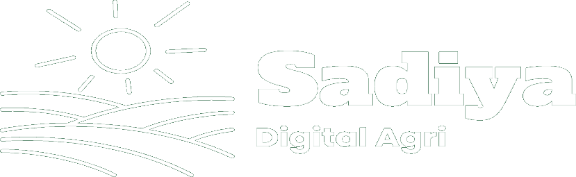

Disponible — Kaolack & partout au Sénégal
Nene Halimatou
Sahdiya Diallo
Technicienne agricole passionnée, je combine expertise terrain, collecte de données et outils numériques pour accompagner les communautés rurales vers un développement durable et inclusif.
- 0+ années d'expérience terrain
- 0 langues parlées
- 0 outils numériques maîtrisés
À propos de moi
Technicienne agricole titulaire d'une Licence Professionnelle en Agro-ressources Végétales (UCAD), je dispose d'une expérience terrain confirmée dans le suivi de productions, la collecte et la gestion de données auprès des communautés rurales.
Je maîtrise les outils numériques de collecte (KoboToolbox, Google Forms), d'analyse (Excel, Power BI) et de gestion de projet (Trello). Motivée par les enjeux de gouvernance foncière, de gestion durable des ressources naturelles et d'inclusion sociale, je mets ces compétences au service des projets agricoles et de développement rural.
Trilingue français, wolof, pulaar, autonome sur le terrain et mobile, je conjugue rigueur scientifique et écoute des communautés — du suivi de parcelles maraîchères à la coordination d'équipes de production.
- Gouvernance foncière
- Ressources naturelles durables
- Inclusion sociale
- Agroécologie
Compétences
Outils numériques & Analyse de données
Agronomie & Développement rural
Boîte à outils
- KoboToolbox
- Google Forms
- Excel
- Power BI
- Google Suite
- MS Office
- Trello
- Canva
Langues
FrançaisCourant
WolofCourant
PulaarCourant
AnglaisNiveau B1
Mon parcours
Expérience
Fév. 2024 — Aujourd'hui
Responsable de Ferme — Suivi de Production & Coordination
Ferme locale · Rao, Saint-Louis, Sénégal
- Collecte et enregistrement régulier des données de production (rendements, intrants, calendrier cultural)
- Suivi d'indicateurs de performance agricole et rédaction de comptes-rendus d'activités
- Coordination d'équipe : planification des tâches, répartition du travail, suivi d'avancement
- Relations partenaires locaux ; restitution orale et écrite des résultats de campagne
Expérience
Août 2023 — Janv. 2024
Technicienne Agronome — Collecte de Données & Suivi Terrain
Société de Culture Légumière (SCL) · Saint-Louis — stage certifié
- Suivi régulier de parcelles maraîchères : observations terrain et collecte de données agronomiques
- Suivi et évaluation des équipes journalières
- Rédaction de fiches techniques et rapports de suivi des cultures
- Accompagnement des journaliers : gestion de l'eau, fertilisation raisonnée, rotation des cultures
Formation
Juin — Sept. 2026
Gestion de Projet & Outils Numériques
Simplon
- Gestion de projet : planification et suivi des tâches avec Trello
- Tableaux de bord, présentations, infographies
- Communication visuelle et digitale
Formation
Août 2024
Bootcamp Entrepreneuriat — Pôle Étudiant Entrepreneur
DIVAC / Agence Universitaire de la Francophonie (AUF), UCAD
- Gestion de projet, planification et suivi d'activités
- Outils technologiques, accès au financement, formalisation d'entreprise
Certification
Mars 2023
Certificat Informatique et Internet (C2i)
Direction de l'Informatique et des Systèmes d'Information, UCAD
- Logiciels de production et de diffusion : traitement de texte, tableur, présentation
- Environnement numérique évolutif et outils collaboratifs en ligne
Diplôme
2022
Licence Professionnelle — Agro-ressources Végétales & Entrepreneuriat
Université Cheikh Anta Diop (UCAD), Dakar
- Gestion des ressources naturelles, systèmes de production agricole, agroécologie, entrepreneuriat rural
- Travaux pratiques de terrain et études de cas en milieu rural sénégalais
Diplôme
2019
Baccalauréat S2 — Sciences Expérimentales
Lycée Zone de Recasement, Keur Massar

Votre partenaire en production agricole et communication digitale
Fondatrice et CEO de Sadiya Digital Agri, j'y réunis mes deux passions : la terre et le digital. Une marque naturelle, organique et chaleureuse au service des acteurs agricoles et des communautés rurales.
Stratégie Social Media
Des lignes éditoriales qui font pousser une communauté engagée autour de vos projets agricoles.
Création de Contenu
Visuels, infographies et récits de terrain qui valorisent productions, savoir-faire et innovations.
Gestion de Communauté
Animation, écoute et fidélisation de vos audiences — du champ jusqu'aux réseaux sociaux.
Références
Kosiwa Dembélé
Technicienne — Société de Culture Légumière (SCL)
Nalla Mbaye
Professeur de Phytopathologie — UCAD
Me contacter
Travaillons ensemble 🌱
Une mission de suivi-évaluation, un projet agricole, une collaboration digitale ? Je suis à votre écoute — sur le terrain comme en ligne.
-
Téléphone+221 77 821 11 75
-
LocalisationKeur Massar, Dakar — Sénégal
-
Site webnene-hsd.vercel.app